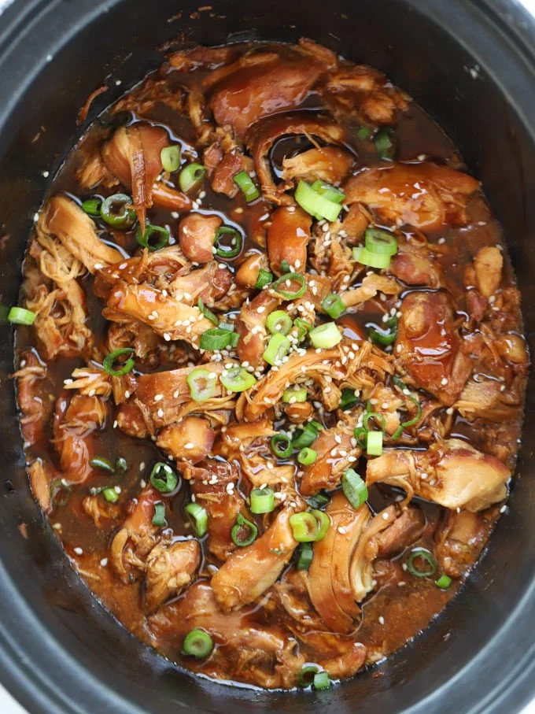

Honey Garlic Chicken Slow Cooker Recipe

Ingredients:
- 1kg Boneless, skinless chicken thighs
- 4 Cloves Garlic
- 2 tsp Fresh ginger
- 8 tbsp Dark soy sauce
- 2 tbsp Oyster sauce Optional
- 4 tbsp Honey Runny or set is fine
- 4 tbsp Tomato ketchup
- 1/2 tsp Chilli flakes Optional